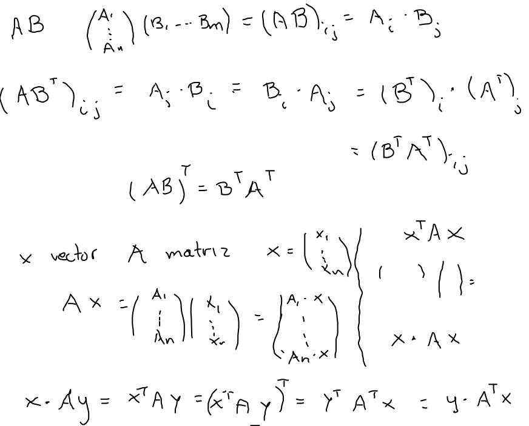
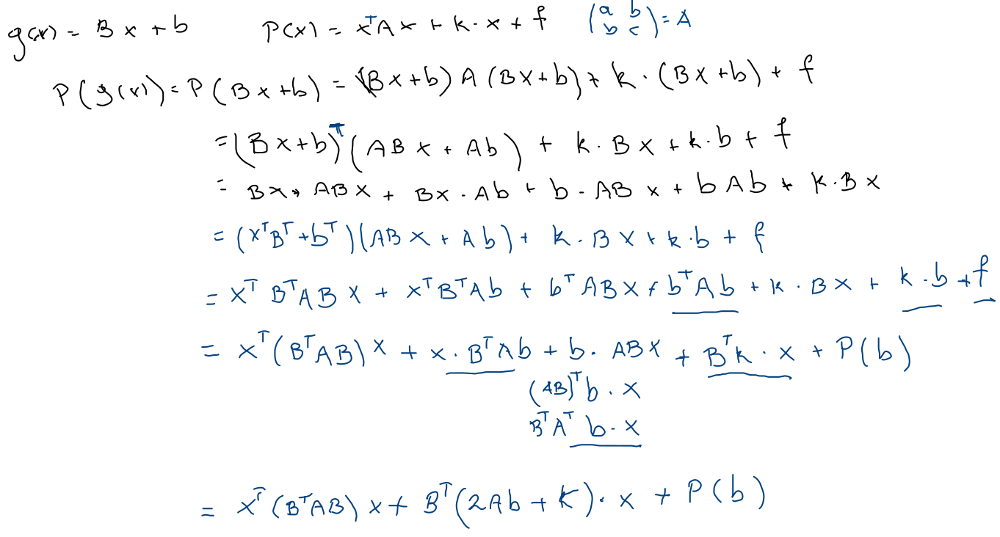
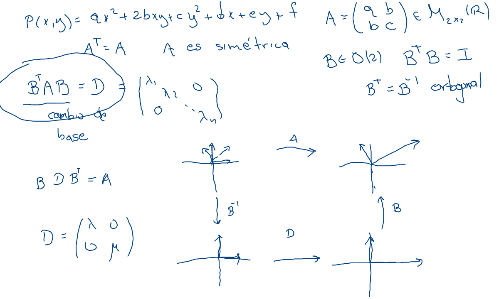

Polinomios cuadráticos
Traspuestas
Afirmaciones
- (AB)T=BTAT
- x⋅Ay=Ax⋅y para A simétrica (A=AT) y x, y cualesquiera vectores.

Equivalencia afín
Denotando g(x)=Bx+b y P(x)=xAx+k⋅x+f, tenemos
(P∘g)x=x(BTAB)x+BT(2Ab+k)⋅x+P(b).

Centro
La traslación de la transformación afín es la que afecta la parte lineal, tomando B=I2 y despejando b tenemos
Afirmación Si det (A)=0 definiendo c=−(1/2)A−1k, se tiene que c es el centro de C(P) y P(x+c)=x⋅Ax+P(c).
Ejes
Sin parte lineal, el polinomio cuadrático se puede simplificar ahora eliminando el término cruzado, esto es diagonalizando la matriz A.
En particular, buscamos una matriz B∈O(2) tal que BTAB es diagonal. Esto es los vectores propios u y v de A.
